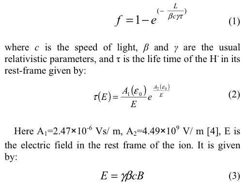
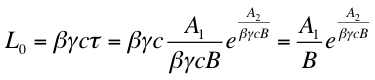
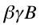
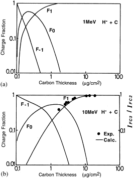

Notes Related to H- Injection Into IOTA
(last modifiled October 2, 2014 by Eric Prebys)
Magnetic Stripping

In other words the mean path length

We see that this is an extremely strong function of ,
and when that product is of order 1T. In our case, this means
that magnetic stripping is not an isssue at all until magnetic fields
are well over 10 Tesla.
Stripping Foils
These energies are typical of what's seen in tandem accelerators. Relevant cross sections can be found here

Clearly, for our energy a thickness of a few micrograms/cm^2 is
desirable. Recent developments show that these thicknesses can be
achieved with carbon nanotubes.
Injection
The booster H- injection page can be found here.
Background Information and References